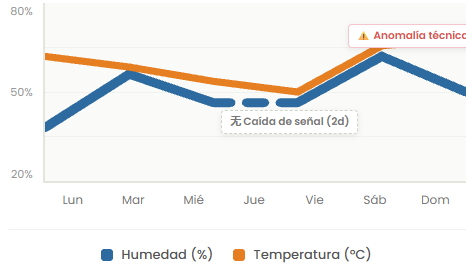

Telemetría Hídrica
Analiza el comportamiento hídrico semanal
Monitorea las subidas y bajadas de humedad según los riegos aplicados. Identifica de manera visual las anomalías en lecturas de hardware o pérdidas de señal de red en campo.
